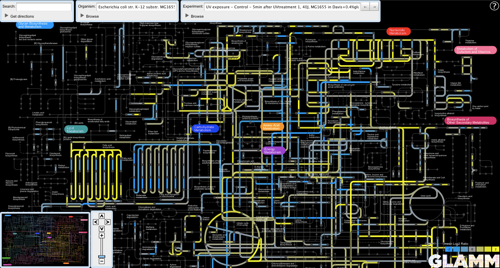
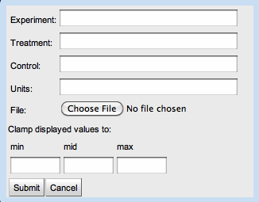

The Genome-Linked Application for Metabolic Maps (GLAMM) is a unified web interface for visualizing metabolic networks, reconstructing metabolic networks from annotated genome data, visualizing experimental data in the context of metabolic networks, and investigating the construction of novel, transgenic pathways. We use Microbes Online as the first of what will ultimately be multiple sources for metabolic reconstruction and pathway data, including custom, user-uploadable networks.
The navigation panel is located at the lower left corner of the main window. The panel includes a thumbnail of the global map with a red reticle indicating the portion of the map visible in the main window.
Immediately to the right of the thumbnail map is the pan/zoom control cluster.
The user can also pan by clicking and dragging directly on the main map. Use the mouse wheel (or equivalent trackpad gesture) to zoom.
Clicking on the nodes (dots) on the main map displays a popup window showing the name of the metabolite, its formula and mass, and a structural diagram, if available.
Clicking on the edges (lines) on the main map displays a popup window showing reaction equations and a list of EC numbers associated with those reactions.
Click on the names of the pathways on the main map displays a popup window showing a thumbnail image of the pathway.
The reactions and compounds involved in this pathway are also highlighted on the map.
All text boxes are able to auto-complete search queries. These text boxes appear in the Organism, Experiment, and Search panels.
The Search panel quickly finds search targets and centers them in the main map window. It aggregates the following search types in a single box:
Search for metabolites based on the its common name and synonyms.
Search for genes based on their names. The user must first select a target organism.
Search for reactions based on their EC numbers.
The user can select an organism for metabolic reconstruction by using the Organism panel. Start typing the name of the organism in the text box and the search will autocomplete.
Alternatively, the user can browse for organisms in the list box disclosed by clicking the triangle next to the Browse label.
Upon selection, GLAMM will attempt to reconstruct the metabolome of the target organism.
The list of organisms can be filtered to only show those organisms for which public microarray data is available from MicrobesOnline by selecting the "Show only organisms with mRNA data" radio button in the browse panel.
Clicking the "Upload Organism" button in the Organism panel displays the organism upload dialog box.
The user may upload an organism by supplying the following information:
Here is a sample organism data file:
The user may download a tab-delimited file containing the set of VIMSS IDs and their EC number assignments by selecting an organism and clicking the "Download Organism" button in the Organism panel.
Click on the "Global Map" button in the Organism panel to revert to the global map.
GLAMM allows the user to view experimental data in the context of metabolic maps.
Before selecting an experiment to view, the user must first select an organism.
Then, select an experiment by typing its name into the Experiment text box or by clicking its row in the experiment table.
The user can build a set of experiments to view by selecting a row in the upper experiment table and clicking the "Add to view subset" button.

Now the user can view the experiments in the view subset by clicking on the arrow buttons next to the Experiment text box.
All popup panels work exactly as before.
To download an experiment in the form of a tab-delimited file mapping loci to measurements, select an experiment in the experiments table and click the "Download experiment" button.
To upload an experiment, click on the "Upload Experiment" button in the Experiment panel.
The user may upload an experiment by supplying the following information:
Here are some example data files to demonstrate GLAMM's experiment data upload capability.
GLAMM can find routes between metabolites on the global map. The user can access this by clicking the triangle next to the "Get directions" label on the Search panel.
If the user chooses to find routes without first selecting an organism, GLAMM will produce a set of organism-independent routes. If more than one route is available, the user can choose between routes by clicking the left and right arrow buttons in the Search panel.
The user can also generate organism-specific routes by first selecting an organism in the Organism panel.
Reactions native to the host are colored white. Non-native reactions each have their own color, corresponding with that of the locus track icon in the route display.
A list of candidate transgenic sources for non-native genes is displayed alongside the non-native reactions.
Selecting a transgenic candidate enables the EC number link to the left of the locus track icon. Clicking on the link takes the user to the Microbes Online page for that gene.